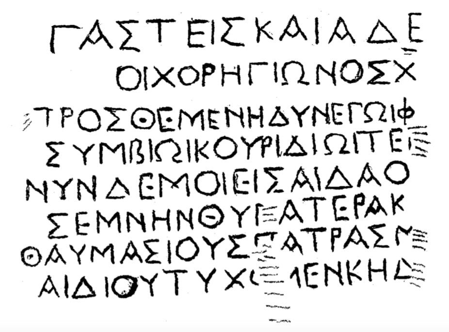

ანაპის ბერძნულწარწერიანი მარმარილოს ფილის ფრაგმენტი
შინაარსი / Summary
ეპიტაფია
ბიბლიოგრაფია Bibliography
კრიტიკული გამოცემა Interpretive Edition
Γάστεις καὶ Ἀδε ίμαντος
οἱ Χορηγίωνος χ αίρετε.
Πρόσθε μὲν ἡδὺν ἐγὼ φ αιδρῶς Γάστεις βίον ἔζην
συμβίῳ κουριδίῳ τέκ να δύο προλιπών
5νῦν δέ μοι εἰς Ἀϊδαο δόμον φίλος ἕσπετ’ ἀδελφός
σεμνὴν θυγατέρα κ τῆμ΄ ἀφιεὶς γαμετῇ
θαυμασίους πάτρας μ ιμούμενοι ἔργμασι φώς
ἀϊδίου τύχομεν κήδ εος ἀμφότεροι
დიპლომატიური გამოცემა Diplomatic Edition
ΓΑΣΤΕΙΣ ΚΑΙ ΑΔΕ ΙΜΑΝΤΟΣ
ΟΙ ΧΟΡΗΓΙΩΝΟΣ Χ ΑΙΡΕΤΕ
ΠΡΟΣΘΕ ΜΕΝ ΗΔΥΝ ΕΓΩ Φ ΑΙΔΡΩΣ ΓΑΣΤΕΙΣ ΒΙΟΝ ΕΖΗΝ
ΣΥΜΒΙΩ ΚΟΥΡΙΔΙΩ ΤΕΚ ΝΑ ΔΥΟ ΠΡΟΛΙΠΩΝ
5ΝΥΝ ΔΕ ΜΟΙ ΕΙΣ ΑΙΔΑΟ ΔΟΜΟΝ ΦΙΛΟΣ ΕΣΠΕΤ’ ΑΔΕΛΦΟΣ
ΣΕΜΝΗΝ ΘΥΓΑΤΕΡΑ Κ ΤΗΜ΄ ΑΦΙΕΙΣ ΓΑΜΕΤΗ
ΘΑΥΜΑΣΙΟΥΣ ΠΑΤΡΑΣ Μ ΙΜΟΥΜΕΝΟΙ ΕΡΓΜΑΣΙ ΦΩΣ
ΑΙΔΙΟΥ ΤΥΧΟΜΕΝ ΚΗΔ ΕΟΣ ΑΜΦΟΤΕΡΟΙ

Gravestone from Anapa, 1880
{'ka': 'გასტის და ადიმანტე, ხორეგიონის ძენო, მშვიდობით. მე გასტისი უწინ ნათლად, ტკბილი ცხოვრებით ვცხოვრობდი, დავუტოვე ორი შვილი კანონიერ თანამეცხედრეს.\n ახლა კი ჰადესის სამკვიდრებელში გამომყვა საყვარელი ძმა. მან მშვენიერი ასული საუნჯედ დაუტოვა მეუღლეს. საქმიანობით ვბაძავდი სამშობლოს საოცარ ვაჟკაცებს, ორივემ\n დავიმკვიდრეთ სამარადისო განსასვენებელი.'}
{'default': 'წარწერა მოასწავებს იმას, რომ ფილა უნდა ყოფილიყო საფლავის ქვა. უდავოა, რომ წარწერა საფლავისაა და მისი პირველი 2 სტრიქონი უეჭველად არის აღდგენილი (თუ არ ჩავთვლით სახელს, Ἀδείμαντος - ასეთი სახელი შავიზღვისპირეთში\n სხვა წარწერებში დადასტურებული არ არის, სამაგიეროდ იგი საკმაოდ გავრცელებულია თვით საბერძნეთში, ეტიმოლოგიაც ბერძნული აქვს). რაც შეეხება დანარჩენს, რაც\n გაგებულია როგორც სამი ელეგიური დისტიქი, იქ უეჭველია ის, რაც ტექსტშია: "უწინ მე ტკბილი... | კანონიერი თანამეცხედრე... | ახლა ჩემთან ჰადესში...|\n მშვენიერი ასული... | სამშობლოს საოცარი... | სამარადისო განსასვენებელი დავიმკვიდრეთ". ყოველივე დანარჩენი არის ვ. ლატიშევის ნიჭიერი მიგნების სავარაუდო ნაყოფი. ტექსტი აღდგენილია ვ. ლატიშევის მიერ (IPE II, ,, 419, 223). აღდგენა, ცხადია, პირობითია, მაგრამ მეტად სარწმუნოა ყველა სხვა გამოცემასთან შედარებით. როგორც ჩანს, წარწერა 2 ძმის (გასტისისა და ადიმანტეს) ეპიტაფიას წარმოადგენდა. ჯერ გარდაცვლილა გასტისი და შემდეგ ადიმანტე. გარდაცვლილები ახალგაზრდანი ჩანან.\n სახელებს, გასტისსა და ხორეგიონს, სპეციალისტები ბოსფორის წარწერებში არა ერთგზის დადასტურებულად მიიჩნევენ.'}
<div type="edition" xml:lang="ka" ana="mtavruli" xml:space="preserve">
<ab>
<lb n="1"/><w lemma="ქრისტე"><expan><abbr>ქ</abbr><ex>რისტ</ex><abbr>ე</abbr></expan></w>
<w lemma="განსუენება"><expan><abbr>გა</abbr><ex>ნ</ex><abbr>ო</abbr><ex>ჳ</ex><abbr>ს</abbr><ex>უ</ex><abbr>ენე</abbr></expan></w>
<w lemma="სულ">სოჳ<lb n="2" break="no"/>ლსა</w>
<name nymRef="ვაჩა">ვაჩაჲს<lb n="3" break="no"/>ასა</name>
<name nymRef="გურა"><expan><abbr>გო</abbr><ex>ჳ</ex><abbr>რაჲ<lb n="4" break="no"/>სასა</abbr></expan></name>
<name nymRef="მირა"><expan><abbr>მ</abbr><ex>ი</ex><abbr>რა</abbr><ex>ჲ</ex><abbr>ს</abbr><ex>ა</ex><abbr>ს</abbr><ex>ა</ex></expan></name>
</ab>
</div>